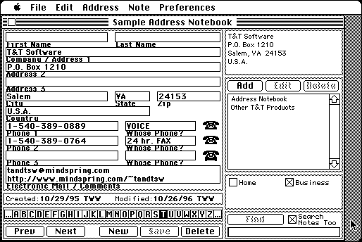

Download
address_notebook_1.1.1.zip (143K) Address Notebook 1.1.1 repackaged into a zipped hfs disk image and checksum file. The disk image can be mounted with Mini vMac.
address_notebook_1.1.1.hqx (225K) Address Notebook 1.1.1 in the original format.
copyright: T&T Software
mod date: Dec 28, 1996
license: shareware
official url :
T&T Software - Address Notebook
“For saving addresses and notes”. Can also print envelopes and labels, and share address books over a network, but Mini vMac doesn't yet do printing or networking. No longer available for sale, but can still download version that holds 25 addresses.

If you find these downloads useful, please consider helping the Gryphel Project, which hosts them.
Here are the md5 checksums for the downloads, signed with Gryphel Key 5:
--------- GRY SIGNED TEXT --------- 14248fe01717c652563d1007c1170288 address_notebook_1.1.1.zip 290783db382ca792b7dbc4c788ffb4f6 address_notebook_1.1.1.hqx ------- BEGIN GRY SIGNATURE ------- Gry/4Xa8CFcUzxdN/EH6SMjxt+6BJmha9aKXaHBuGh+XqDoZOjwFPBE6tQsYfbom gvlREJQOuo/s/LHZAUkL6decR1dZqQHGjYNdJBgtG0CT2dGUlZ9Av3ttBRkbCVVC SglJU2VsBemWb22fJ+8y0pTzytOKBmUnz0UHQlsPpOSnoE3b4ic+Hq3UX0FH48UQ -------- END GRY SIGNATURE --------